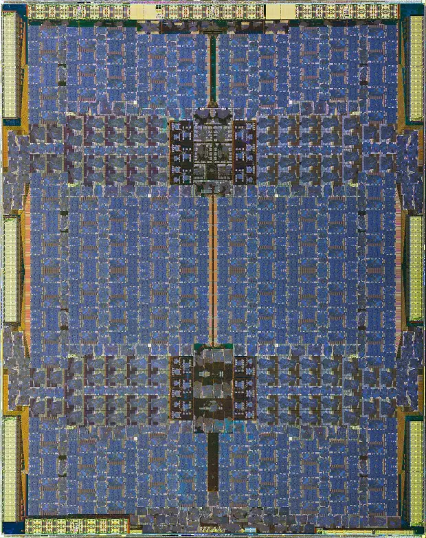
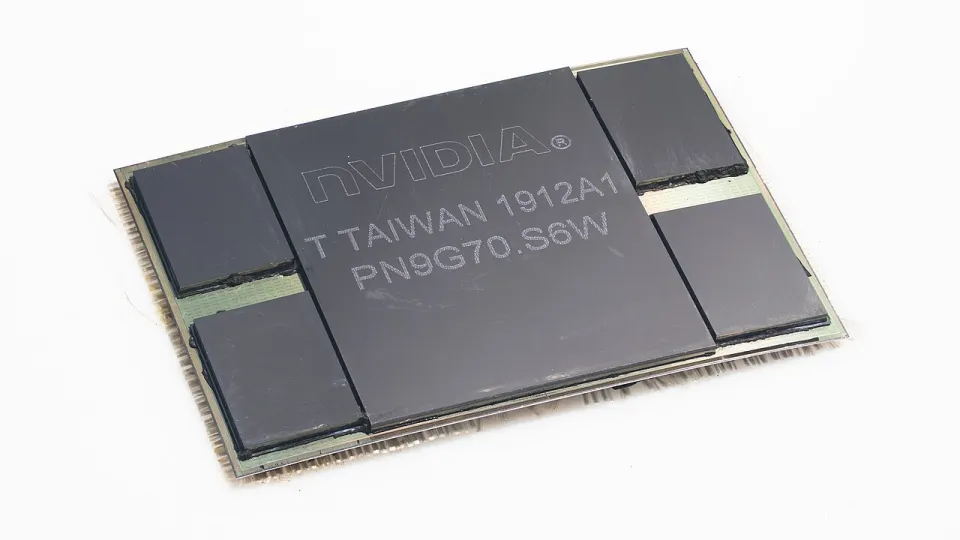

A GPU is a hundred or more identical streaming multiprocessors (SMs) whose tensor cores do almost all of the arithmetic; everything else on the chip (thousands of resident threads, a huge register file, shared memory, copy engines, tensor memory) exists to keep those tensor cores fed, because in every generation math got cheaper faster than moving data.
Schematic drawn to counts, not to silicon area. Latencies are Luo et al.'s H800 measurements (Table IV, cycles) independent; sizes from Hopper in depth vendor spec. Sections 2 to 9 zoom into each part.
The running example. A training step is almost all matrix multiplies, cut into output tiles, one per SM at a time. We follow one: a 128 × 128 block of the output built from a 128 × 64 slice of one input and a 64 × 128 slice of the other, 1,048,576 multiply-adds (FMAs) derived: 128 × 128 × 64.
You need: a matrix multiply seen as tiles; the parent Topic: hardware (section 2) for the intuition. Programming these pieces is Topic: cuda-and-gpu-programming.
Dense tensor-core peaks in TFLOPS, never the 2:4 sparse figures vendors print first. RTX 5090 BF16 and FP8 are with FP32 accumulation, the setting training uses. B200 is the HGX part (the GB200 rack's B200 runs at 2,500 BF16). Sources per column: A100 in depth, Hopper in depth, HGX page, Inside Blackwell Ultra, Inside Rubin (Jul 21 2026), RTX Blackwell whitepaper Appendix A, CUDA Programming Guide, compute capabilities (shared memory per SM). B200's 148 SMs are from an independent paper (Jarmusch and Chandrasekaran 2025) and How To Scale Your Model; NVIDIA's fetched pages do not state it. The table's rows: year, compute capability, SMs enabled of the full die, dies, tensor-core generation, shared memory and tensor memory per SM, L2, memory and bandwidth, BF16, FP8 and FP4 dense. vendor spec
The choice behind it. A CPU core spends its area making one thread fast (big caches, branch prediction, out-of-order execution); an SM spends it on arithmetic lanes and on storage for many threads, so the arithmetic never waits on memory that answers in hundreds of cycles.
The layout. Four identical quadrants (sub-partitions). Each has a warp scheduler that picks one warp each cycle and issues its next instruction to 32 lanes at once, a 64 KB slice of the register file (16K 32-bit registers), its arithmetic lanes ("CUDA cores": 32 FP32 lanes on Hopper, 16 on the A100) and its own tensor core. The four share one block of SRAM split at launch between an L1 cache (filled by hardware) and shared memory (filled by the program), plus load/store units and, from Hopper on, the TMA copy engine (section 8). Blackwell datacenter parts add tensor memory (TMEM), 256 KB per SM that only the tensor cores use.
Predict, then switch: what grows from A100 to H100, and what appears on B200 / B300? (Lanes per quadrant double from 16 to 32 and the shared store grows from 192 to 256 KB; tensor memory appears beside the shared store. The RTX 5090 keeps the quadrants with half the shared store and no TMEM.) Drawn to the counts, not to silicon area.
Sources: A100 in depth (64 fp32 lanes, 4 tensor cores, 192 KB L1/shared, 256 KB registers per SM), Hopper in depth (128 fp32 lanes, 256 KB L1/shared, 256 KB registers), Inside Blackwell Ultra (128 CUDA cores, 4 tensor cores, 256 KB TMEM per SM), RTX Blackwell whitepaper (256 KB registers, 128 KB L1/shared per SM), CUDA Programming Guide, compute capabilities v13.4.2 (warps, blocks, shared memory per SM, 255 registers per thread), How To Scale Your Model, GPUs (four sub-partitions, 16K registers and one tensor core each). vendor spec
Why the register file is the largest memory in the SM. 256 KB of registers per SM is more than the 228 KB of shared memory an H100 kernel can use; across 132 SMs that is 33.0 MiB 132 × 256 KiB, two thirds of the size of the 50 MB L2. Every resident warp keeps all its registers there all the time, so switching from a stalled warp to a ready one costs nothing: no state is saved or restored, unlike a CPU context switch. That free switch is the latency-hiding trick of section 3, and the register file's size is what pays for it.
Our tile. Its running sums are 128 × 128 FP32 numbers, 64 KB: a quarter of the SM's register file, held for the whole tile. On Ampere and Hopper they live in registers (128 per thread for a 128-thread block); Blackwell's tensor memory exists to take them out (section 8).
The same SM from the programmer's side (threads, blocks, how a kernel maps onto it), with a step simulator: Programming model and the CUDA topic's GPU simulator.
The problem. A load from HBM takes about 466 cycles on an A100 and 479 on a Hopper (H800), measured by Luo et al. 2024, Table IV independent.
How it works. Each quadrant's scheduler holds up to 16 resident warps on A100, H100 and B200 (64 per SM; 48 per SM on the RTX 5090). Every cycle it issues from any warp whose next instruction has its inputs ready; a warp waiting on memory is simply skipped, at no cost (section 2). So the question is "is some warp always ready". Predict before you step: with all 16 slots full, how busy is the scheduler?
Illustrative program: each warp issues its load(s), waits for all of them, then issues 8 arithmetic instructions per load; one issue per cycle; load latency 466 cycles (A100, Luo et al. Table IV). Scheduler policy: greedy then oldest (keep the current warp until it stalls, then the lowest-numbered ready warp), a policy from the research literature; NVIDIA does not publish its own. Utilisation counted from cycle 1,000 on, after start-up. Python reference: src/recompute.py (hide_sim), which the page's numbers match.
What it shows. With 2 warps the scheduler issues in 3.6% of cycles; with all 16 slots filled, still only about 34%, because each warp has only a few instructions of work per load. The bound is the fraction of time any warp has work: utilisation ≈ W × (instructions per load round) / (instructions + latency) = 16 × 9 / 474 ≈ 30% derived. The third mode keeps the same 16 warps but lets each issue 4 independent loads before it needs any, and the scheduler is busy 100% of the time: memory-level parallelism inside each thread (unrolled loops, 16-byte loads, and from Ampere on copy hardware, section 8).
At 4 bytes per thread that is 1,731 loads in flight on every SM at once, close to the 2,048 threads an SM can hold at all; at 16 bytes per thread (one float4), 433. Hence 16-byte loads, several outstanding per thread, and on Hopper and Blackwell the TMA, which keeps whole tiles in flight without threads.
Left, a coalesced read of 256 MB (each thread loops over the buffer in 16-byte loads): 1.27 GB/s with 32 threads (one SIMD-group, Apple's warp), 148 GB/s with thousands, 117 times more from parallelism alone, flattening near 8,192 threads, 512 per core. Right, a 256 MB pointer chase in which each thread's next address depends on its last load: 2.0 million to 406 million loads per second, 202 times. Apple M1 Pro 16-core GPU, medians of 3 runs, whiskers the run spread. measured here
No NVIDIA GPU was available, so the microbenchmarks that papers such as Luo et al. run to dissect NVIDIA GPUs were run on the Apple M1 Pro's 16-core GPU. It is a real SIMT GPU: SIMD-groups of 32 threads (Apple's warps), threadgroups (blocks), threadgroup memory (shared memory). What transfers is the shape of each result and the mechanism; the numbers do not, and each chart says which is which.
Method: src/m1/gpu_micro.py, custom Metal kernels through mx.fast.metal_kernel; three full runs 20 s apart (src/run_all.sh); each point is the median of the three runs' medians of 5 timings, whiskers the lowest and highest run median. Every chase result is checked against the chain computed in NumPy, every read against a float64 sum. The laptop was shared with other work. Raw outputs: src/m1/out/.
The problem. Section 3 needs many warps resident, but every resident warp holds its registers and its block's shared memory for its whole life, and the SM has a fixed amount of each. Occupancy, resident warps over the maximum, is set by whichever of four limits runs out first: warp slots, block slots, registers (64K per SM, given to each warp in units of 256 and split across the four quadrants) and shared memory (each block's request plus 1 KB that CUDA reserves). How a launch meets these limits, with a planner, is section 5 of Programming model; the silicon limits per generation are here.
| Per SM | A100 (8.0) | RTX 4090 (8.9) | H100 (9.0) | B200 (10.0) | RTX 5090 (12.0) |
|---|---|---|---|---|---|
| Resident warps (threads) | 64 (2,048) | 48 (1,536) | 64 (2,048) | 64 (2,048) | 48 (1,536) |
| Resident blocks | 32 | 24 | 32 | 32 | 24 |
| Registers (max per thread) | 64K (255) | 64K (255) | 64K (255) | 64K (255) | 64K (255) |
| Shared memory per SM (per block) | 164 KB (163) | 100 KB (99) | 228 KB (227) | 228 KB (227) | 100 KB (99) |
| L1 + shared memory, unified | 192 KB | 128 KB | 256 KB | 256 KB | 128 KB |
Source: CUDA Programming Guide v13.4.2, compute capabilities, Tables 30 and 31 (fetched 2026-10-05); RTX 4090 L1 from the RTX Blackwell whitepaper Appendix A (16,384 KB over 128 SMs). The 1 KB reservation: Ampere tuning guide. The rules are NVIDIA's own cuda_occupancy.h, which the CUDA topic ported and checked on 1,988 cases. vendor spec
Our tile's kernel illustrative kernel: 128-thread blocks, 168 registers per thread (the 128 accumulator registers of section 2 plus addresses and operands) and 64 KB of shared memory (two 32 KB stages of the A and B slices, so the next loads while this one is used). On an H100, registers allow 3 blocks and shared memory 3, so 12 warps of 64, an occupancy of 19% derived with the cuda_occupancy.h rules. That is normal for a tensor-core kernel: it hides latency with copies in flight (section 8), not with warps, and forcing occupancy up by capping registers makes it spill and run slower. A simple elementwise kernel (256 threads, 32 registers, no shared memory) reaches 100%.
The 256 MB coalesced read of section 3 with 65,536 threads in 64-thread groups, each group reserving X KB of threadgroup memory (Apple's shared memory) it does not use. Up to 4 KB per group the bandwidth stays near 140 GB/s; at 20 KB it falls to 95 GB/s and from 24 KB to 66 GB/s. The steps fall where a core holding 64 KB would fit 3 groups (20 KB) and then 2 (24 to 32 KB) inferred: Apple does not publish the per-core size. measured here
The problem. A warp's 32 threads share one instruction stream (SIMT, single instruction, multiple threads). If an if sends some threads one way and some the other, the lanes cannot run both paths at once: the warp runs each path in turn with the other threads switched off, then the paths rejoin. The cost is the sum of the paths taken by any thread in the warp, not a fixed "halving": two equal paths cost 2 times, 32 different paths 32 times. Divergence between warps costs nothing, because each warp has its own instruction stream. Predict: 32 paths chosen by lane, against 32 paths chosen by warp?
Every thread runs one of K different FMA loops of equal length (65,536 threads, 8,192 iterations of 8 FMAs). Divergent: the loop is chosen by the thread's lane within its 32-wide SIMD-group. Uniform: chosen by SIMD-group, so all 32 lanes agree. Median of 3 runs of 5 timings each; system load average (the laptop was shared). Apple M1 Pro GPU, MLX . measured here
What it shows. Divergent: 2 paths take 1.95 times as long, 32 paths 38.6 times (a little over 32, likely because 32 loop bodies no longer fit the instruction cache; not verified). Uniform: 1.14 times at 32 paths, essentially free. The M1's SIMD-group is 32 wide like an NVIDIA warp, so the lesson transfers directly.
When it matters for training. Rarely in matmuls (every thread does the same thing); more in kernels with data-dependent work per thread: masks in attention, ragged sequence lengths, sampling, MoE routing. The fix is to assign work so whole warps take the same path (sort or bucket by length, one row per warp).
The problem. Our tile's 32 KB of inputs (a 128 × 64 and a 64 × 128 slice of BF16, 2 bytes per number) are each used 128 times. Fetching them from HBM every time would need 128 times the bytes; keeping them close to the tensor cores turns a memory-bound tile into a compute-bound one. Each rung below is bigger, farther and slower than the one before.
| Rung | Size (H100) | Who manages it | Latency, cycles (A100 / H800 / RTX 4090) | ns on H800 derived |
|---|---|---|---|---|
| Registers | 256 KB per SM | compiler | operand of the instruction | |
| Shared memory | up to 228 KB per SM | the program | 29.0 / 29.0 / 30.1 | 16.5 |
| L1 cache | the rest of the 256 KB | hardware | 37.9 / 40.7 / 43.4 | 23.2 |
| Another SM's shared memory (DSMEM, Hopper on) | within a cluster | the program | 180 (H800 only) | 102.6 |
| L2 cache | 50 MB, shared by all SMs | hardware | 261.5 / 263.0 / 273.0 | 149.9 |
| HBM (global memory) | 80 GB | the program | 466.3 / 478.8 / 541.5 | 272.8 |
Latencies: Luo et al., Benchmarking and Dissecting the Nvidia Hopper GPU Architecture (Feb 2024), Table IV, on an A100 PCIe, an H800 PCIe (a Hopper GPU, 114 SMs) and an RTX 4090; DSMEM latency from its section on distributed shared memory. Nanoseconds at the H800's 1,755 MHz cycles / clock. Sizes: Hopper in depth. independent
What it shows. Shared memory answers in about 29 cycles on all three GPUs; L2 in about 260 to 270, nine times longer; HBM in 470 to 540, almost twice L2 again. A likely reason, not measured by the paper: L2 is shared by every SM on a die of about 800 mm², so a request may cross the chip and back.
One thread follows a random cyclic chain through buffers from 4 KB to 256 MB, one hop per 128-byte line, so every load depends on the last and nothing overlaps (launch overhead cancelled by timing two chain lengths). About 41 ns up to 16 KB, 74 ns from 32 KB to 1 MB, about 340 ns from 4 to 32 MB, and 485 ns at 256 MB (DRAM, with address-translation misses included). measured here
Two things the ladder decides for training. L2 sizes of 40 MB (A100), 50 MB (H100) and 96 MB (RTX 5090) can hold a layer's activations for small batches, so data re-read soon after it was written may never touch HBM. And the L1 / shared split is chosen per kernel: matmul and attention take nearly all of it as shared memory, because they know which tile they will reuse; elementwise kernels leave it as cache.
Coalescing, bank conflicts and tiling from the programmer's side: GPU memory hierarchy. HBM, GDDR and SRAM as technologies, and bandwidth against working-set size: Memory technology.
The problem. Ordinary lanes do one multiply-add per thread per instruction. An H100 SM has 128 of them, so our tile's million FMAs would take 8,192 cycles of perfect issue. But in a matrix multiply every number of A meets a whole row of B, and a tensor core exploits that structure: a small fixed-function array that takes a tile of A, a tile of B and an accumulator tile and returns A·B + C in one instruction.
Throughput per SM. On the A100 each of the 4 tensor cores per SM does 256 FP16 multiply-adds per clock, 1,024 per SM, sixteen times the A100 SM's 64 FP32 lanes (A100 in depth). The H100's do twice that per SM on the same types and four times with FP8 (Hopper in depth): 2,048 FP16 FMAs per SM per clock, a rate that reproduces the H100's 989.5 TFLOPS at a 1.83 GHz clock 989.5e12 / (132 × 2,048 × 2), a clock NVIDIA's blog leaves "not finalized". NVIDIA publishes no per-SM rate for Blackwell; Rubin "doubles the Tensor Core throughput per clock by doubling the amount of data it can process along the K dimension" (Inside Rubin).
The bigger change across generations is not the rate but who issues the multiply, where its operands come from, and where its results go: that is what decides whether threads, registers and shared memory can keep up. Predict before you step: on which generation does the accumulator leave the register file?
Tile 128 × 128 × 64, BF16 inputs, FP32 accumulators, one thread block on one SM. Instruction counts from the shapes in the PTX ISA (9.4): mma.sync m16n8k16 per warp, wgmma m64nNk16 (N up to 256) per warpgroup of 4 warps, tcgen05.mma 128 × N × 16 issued by one thread derived: (128/m) × (128/n) × (64/k). Clocks at the published per-SM rates; none for Blackwell (not published). Layout schematic, not to silicon area.
What it shows. Ampere needs 512 warp instructions and every operand passes through registers; Hopper needs 8 warpgroup instructions reading straight from shared memory, but its accumulators still fill a quarter of the register file; Blackwell needs 4, issued by a single thread, and the accumulators move to tensor memory. Each step frees threads for addresses, epilogues or softmax. On an H800, Luo et al. found the Ampere-style mma reaching on average only 62.9% of the tensor cores' peak, while wgmma reaches 729.3 of 756.5 TFLOPS (96.4%) in FP16 (Luo et al. 2024, Table VIII) independent: a kernel written for the A100 runs on an H100 but leaves a third of its tensor-core peak unused.
| Generation | First in | Formats added | Who issues | Operands from | Accumulator in |
|---|---|---|---|---|---|
| 3rd | A100, 2020 | TF32, BF16, 2:4 sparsity | mma.sync, one warp, synchronous | registers | registers |
| 4th | H100, 2022 (Ada RTX 4090 too, without wgmma) | FP8 (E4M3, E5M2) | wgmma, a warpgroup of 4 warps, asynchronous | shared memory (A may be registers) | registers |
| 5th | B200, 2024 | FP6, FP4, block-scaled MXFP8/6/4 and NVFP4 | tcgen05.mma, one thread, asynchronous; one instruction can span a pair of SMs | shared memory (A may be TMEM) | tensor memory |
| 5th, consumer | RTX 5090, 2025 | FP4, FP8 (native mma.sync) | mma.sync only: no wgmma, no tcgen05 | registers | registers |
| Rubin | 2026 | FP8 at 4.4 and NVFP4 at 8.75 times the BF16 rate (dense); a 3-bit lookup-table format for matrix B | not described in detail yet | not stated | |
Sources: A100 in depth, Hopper in depth, PTX ISA (wgmma, tcgen05, TMEM, cta_group::2), Inside Blackwell Ultra ("dual-thread-block MMA, where paired SMs cooperate on a single MMA operation"), Inside Rubin; consumer rows from the CUDA topic's compiles. Ada's FP8 tensor cores: RTX Blackwell whitepaper Appendix A (RTX 4090 FP8 column). Generation numbers follow NVIDIA's naming.
tcgen05 and tensor memory exist for sm_100a, sm_103a and sm_110a, not for sm_120, so the 5090 multiplies with mma.sync like an Ada card. The instructions themselves (fragments, descriptors, which target accepts which, and real SASS such as HMMA, HGMMA, UTCHMMA and QMMA per target) are taught on Libraries and tensor cores, section 5 and its Instruction atlas tab. compiled there, not runThe problem. Each generation doubled the tensor cores' appetite, but the threads that fetched their data stayed the same. On an A100 a thread copies 16 bytes per instruction, so filling our tile's 32 KB of inputs takes 2,048 copy instructions plus the address arithmetic for each 32,768 / 16, every k-step, competing for the issue slots of the math. The hardware added since moves that work off the threads.
Global memory straight into shared memory, skipping the registers and not stalling the issuing thread ("eliminating the need for intermediate register file usage", A100 in depth). Threads still issue one per 16 bytes, but can issue the next tile's copies and compute on the current one: double buffering.
A copy engine in each SM. One thread hands it a descriptor (base address, shape and strides of a 1D to 5D tensor, the box to fetch) and the TMA moves the whole tile between global and shared memory, address arithmetic included (Hopper in depth). Our tile's inputs: 2 instructions instead of 2,048. Completion is tracked by an asynchronous transaction barrier that counts arriving bytes.
A cluster is up to 16 thread blocks that "run concurrently across SMs within a GPC" (Hopper in depth); each can read and write the others' shared memory (distributed shared memory), about 7 times faster than exchanging through global memory per NVIDIA, 180 cycles and up to 3.27 TB/s per Luo et al. One TMA load can be multicast to several SMs of the cluster that need the same tile (.multicast::cluster in the PTX ISA).
256 KB per SM, organised as 128 lanes × 512 columns of 32-bit cells, allocated by columns and read only by the tensor cores and by explicit copies to registers (PTX ISA, tcgen05). Our tile's FP32 accumulators take 128 of the 512 columns, so two tiles can accumulate while a third is written out. Rubin widens it: CUTLASS 4.8.0's changelog (September 2026) says Rubin extends "TMEM size from 512 COL to 576 COL", with shared memory allocations up to 328 KB vendor.
What this changed in kernels. Once copies and multiplies are both asynchronous, the fastest kernels split warps by role (producer warps issue TMA copies into a ring of shared-memory buffers, consumer warps issue the multiplies), which is warp specialisation, taught with its barriers on Libraries and tensor cores, section 6. The hardware payoff: FlashAttention-3, built on overlapping TMA and tensor cores, reaches up to 740 TFLOPS in FP16 on an H100 (75% of peak). The RTX 5090 sits in between: its sm_120 target compiles TMA copies and clusters but has no wgmma, no tcgen05 and no tensor memory, so its kernels look like Ampere's mma.sync kernels fed by Hopper's copy engine.


How SMs are grouped. Two SMs form a TPC (texture processing cluster); TPCs form a GPC (graphics processing cluster), which also bounds a thread-block cluster. The full GA100 has 8 GPCs of 8 TPCs (128 SMs) and the A100 enables 108; the full GH100 has 8 GPCs of 9 TPCs (144 SMs) and the H100 SXM enables 132; the RTX 5090's GB202 has 12 GPCs (192 SMs) and enables 170 in 11 GPCs. Shipping fewer SMs than the die has lets a die with a few defective SMs still be sold; NVIDIA's documents give the counts, not the yields.
L2 and memory. Memory controllers sit at the die edge, one channel each: on the A100 and H100, 10 of the die's 12 512-bit controllers are enabled, feeding 5 of its 6 HBM stack sites; the RTX 5090 has sixteen 32-bit GDDR7 controllers (a 512-bit bus). The L2 is split into partitions near the controllers (two on the A100, "divided into two partitions to enable higher bandwidth and lower latency"; four on the B200 per Jarmusch and Chandrasekaran).
Two dies as one GPU. A die cannot be larger than the reticle; the A100 (826 mm²) and H100 (814 mm²) are near it. Blackwell's answer is two "reticle-sized" dies, 208 billion transistors in total, joined by a 10 TB/s link (NV-HBI) and presented to software as one GPU with one memory space. Blackwell Ultra keeps the two-die design with 160 SMs in 8 GPCs and eight 12-high HBM3e stacks on 16 512-bit controllers; Rubin is again two dies, 336 billion transistors and 224 SMs (Inside Blackwell Ultra, Inside Rubin).
Predict, then compare: A100 against H100 (same 8-GPC plan, one more TPC per GPC, same 5 of 6 HBM sites); H100 against B200 (one die to two); B200 against Rubin; H100 against RTX 5090 (12 GPCs, GDDR7 controllers around the edge instead of HBM stacks). Cells that differ are highlighted.
A schematic drawn to the counts, not to silicon area or position: NVIDIA does not publish which SMs are disabled on a given chip, so their positions are illustrative, and where a count is not published the drawing says so instead of guessing. Sources: A100 in depth (GA100: 8 GPCs, 8 TPCs per GPC, 128 SMs, 6 HBM2 stacks, 12 512-bit controllers; A100: 108 SMs in 7 GPCs, 5 stacks, 10 controllers; 40 MB L2 in two partitions), Hopper in depth (GH100: 8 GPCs, 9 TPCs per GPC, 144 SMs, 6 stacks, 60 MB L2; H100 SXM5: 66 TPCs, 132 SMs, 5 HBM3 stacks, 10 controllers, 50 MB), Jarmusch and Chandrasekaran 2025 (B200: 148 SMs in 8 GPCs, four L2 partitions, eight HBM3e stacks; independent), Inside Blackwell Ultra (160 SMs in 8 GPCs, two reticle-sized dies, eight 12-Hi stacks, 16 512-bit controllers, 208B transistors, TSMC 4NP), Inside Rubin (two dies, 224 SMs, 336B transistors, HBM4 12-Hi), RTX Blackwell whitepaper (GB202: 12 GPCs, 96 TPCs, 192 SMs, sixteen 32-bit controllers, 128 MB L2; RTX 5090: 11 GPCs, 85 TPCs, 170 SMs, 96 MB L2), and the parent page's Chip atlas for process, transistors and area. vendor spec
The rule. A tensor core is faster at a format only if it has a datapath for it; otherwise the format saves memory and bandwidth, but the multiply runs at a format the hardware does have. The table gives each chip's dense tensor-core peak per format, coloured by its ratio to the same chip's BF16 rate.
Dense figures for A100, RTX 4090, H100 SXM, B200 and B300 (HGX), RTX 5090 and Rubin; rows TF32, FP16 / BF16, FP8, FP6, FP4, INT8 (TOPS), FP64 tensor. Vendor pages via the shared facts file (fetched 2026-10-05): A100, H100, HGX B200 and B300 (per GPU = board total / 8, sparse rows halved as the page's footnote says), RTX Blackwell whitepaper Appendix A (FP32 accumulation where it matters), Inside Rubin and the HGX page (Rubin FP4 is the 35 PF dense training figure, not the 50 PF sparse inference one). "none": no tensor-core path; "n/s": not stated on the fetched source. vendor spec
mma.sync becoming two FP16 multiplies on sm_90a).The ridge moves with the format, not the generation. A kernel is compute-bound only above peak / bandwidth FLOPs per byte. At BF16 that is 153 on the A100, 295 on the H100, 281 on the B200 and 182 on Rubin, whose HBM4 grew faster than its BF16 math; at FP8 it is 591, 563 and 795 dense peak / bandwidth. The roofline itself is taught on Performance math and measured in the parent's Roofline lab.
How the bits encode a number and where each format overflows: Numerical computing for ML. Block scaling (MX, NVFP4) and its cost in bits: the parent page's section 4. Training and serving in these formats: Quantization and Precision.
The RTX 5090 has more SMs than an H100 and the same marketing generation as the B200. What separates them is everything around the SM.
Rows: SMs; compute capability and wgmma / tcgen05; BF16 with FP32 accumulate, FP8 and FP4 dense; memory, bandwidth, L2; shared memory per SM and resident warps; GPU-to-GPU link; power; price ($1,999 at launch for the 5090). Sources: RTX Blackwell whitepaper Appendix A; H100 page; HGX page and DGX B200 (180 GB, 8 TB/s per GPU); B200 power from Inside Blackwell Ultra Table 2 ("up to 1,200 W", SKU not stated); per-SM limits from the CUDA Programming Guide; RTX 5090 price NVIDIA newsroom, Jan 6 2025. vendor spec
Reading the table. For one-GPU, memory-bound inference of a model that fits in 32 GB, a 5090 is about half an H100 (bandwidth 0.53 times), and FP4 helps it further. For training it is much further behind: BF16 with FP32 accumulation is 0.21 times an H100's; 32 GB holds model and optimizer state for only about 2 billion parameters at 16 bytes each; there is no NVLink, so two cards talk over PCIe 5.0 at 64 GB/s each way, about 7 times less than an H100's 450 GB/s NVLink per direction; and its kernels cannot use wgmma or tcgen05. It is a good target for learning kernels at sm_120 and for FP8/FP4 inference; it is not a small H100.
Each generation answers the bottleneck the previous one exposed. Read down the column "why".
| Part, year | What changed | Why (the bottleneck it answers) |
|---|---|---|
| A100, 2020 | TF32 and BF16 tensor cores, 2:4 sparsity, asynchronous copy, 40 MB L2, 1,024 FP16 FMAs per SM per clock (2 times Volta) | FP32 training could not use tensor cores at all; BF16 keeps FP32's range so no loss scaling; copies through registers wasted issue slots and registers |
| H100, 2022 | FP8, 2 times the per-SM tensor rate, wgmma, TMA, clusters with DSMEM, 50 MB L2, HBM3 3.35 TB/s, NVLink 900 GB/s | Feeding a faster tensor core from threads did not scale (mma reaches 62.9% of Hopper's peak); data had to move without threads, and between SMs without L2 |
| H200, 2023 | Same compute, 141 GB HBM3e at 4.8 TB/s | Memory capacity and bandwidth, not FLOPS, limited large-model inference and long contexts |
| B200, 2024 | Two dies as one GPU (208 billion transistors, 10 TB/s NV-HBI), FP6, FP4 and block-scaled formats, tcgen05 and 256 KB TMEM per SM, 8 TB/s, up to 1,200 W | One die had reached the reticle limit; accumulators were crowding the register file; inference wanted 4-bit |
| B300, 2025 | FP4 1.5 times B200 (15 against 10 PF), 288 GB, attention SFU throughput doubled, FP64 and INT8 cut, up to 1,400 W | Inference: FP4 math, KV-cache capacity, and the softmax exponentials that were starting to bound attention once matmuls got this fast |
| Rubin, 2026 | 336 billion transistors, 224 SMs, HBM4 up to 22 TB/s, NVLink 6 at 3.6 TB/s, tensor throughput per clock doubled along K, FP8 at 4.4 times BF16, exponential throughput 2 times (FP32) and 4 times (BF16) Blackwell | Bandwidth again (2.8 times Blackwell), low-precision training, attention |
Sources as in sections 7 to 11 plus H200 page. The "why" column is the reading of NVIDIA's own stated motivations (the blogs above) and of the measurements on this page; where NVIDIA states no motivation (H200, FP64 cut), it is the page's reading. Rubin: "ramping into full production" and "production shipments ... set to begin starting this fall" (NVIDIA newsroom, May 31 2026). The first cloud capacity, Google's A5X bare-metal instances on Vera Rubin NVL72, went live for one customer (Ineffable Intelligence) on October 21, 2026, under a headline announcing general availability whose text says "General availability of the instances is coming next month" (NVIDIA blog, Oct 21 2026). No independent measurement exists yet.
The same idea, different names. AMD's Instinct GPUs are the same kind of machine: a compute unit (CU) is AMD's SM, its matrix cores are tensor cores, LDS (local data share) is shared memory, and a wavefront is the warp, but 64 threads wide on CDNA 3 and 4 (MI300X, MI355X), not 32. What differs is how the chip is built: past the reticle limit with many small dies instead of two big ones.
Schematic drawn to counts, not area. B200: two reticle-sized dies joined at 10 TB/s (NV-HBI), eight HBM3e stacks. MI300X: 8 accelerator complex dies (XCDs, TSMC 5 nm, 40 CUs each with 38 enabled, "2 disabled for yield management") stacked on 4 I/O dies (TSMC 6 nm) that hold a 256 MB Infinity Cache (17.2 TB/s peak) and the controllers for 8 HBM3 stacks, two per I/O die. Sources: AMD CDNA 3 white paper, Inside Blackwell Ultra. vendor spec
| Per unit and per GPU | H100 SXM (SM) | MI300X (CU) | MI355X (CU) |
|---|---|---|---|
| Units enabled | 132 | 304 (8 × 38) | 256 (8 × 32 of 36) |
| Dense BF16 FLOPs per unit per clock | 4,096 (2,048 FMAs) | 2,048 | 4,096 |
| Clock | 1.83 GHz derived | 2.1 GHz | 2.4 GHz |
| Dense BF16 peak, TFLOPS | 989.5 | 1,307.4 | 2,516.6 |
| Threads per warp / wavefront | 32 | 64 | 64 |
| Shared memory (LDS) per unit | up to 228 KB | 64 KB | 160 KB |
| Vector register file per unit | 256 KB | 512 KiB | 512 KiB |
| Caches | 50 MB L2 | 4 MB L2 per XCD + 256 MB Infinity Cache | 4 MB L2 per XCD + 256 MB Infinity Cache |
| Memory | 80 GB HBM3, 3.35 TB/s | 192 GB HBM3, 5.3 TB/s | 288 GB HBM3E, 8 TB/s |
The peaks reproduce AMD's figures from units × FLOPs per clock × clock: 304 × 2,048 × 2.1 GHz = 1,307.4 TFLOPS and 256 × 4,096 × 2.4 GHz = 2,516.6 TFLOPS derived, reproduces.
AMD CDNA 3 white paper and AMD CDNA 4 white paper (Table 1, FLOPs per clock per CU), ROCm GPU hardware specifications (wavefront size, LDS, VGPR file), all fetched 2026-10-05 for the sibling TPUs and other accelerators page. vendor spec
What it shows. AMD chose more, smaller units: an MI300X CU does half an H100 SM's BF16 work per clock and wins on count (304 against 132) and clock; MI355X doubled the per-CU rate to match an H100 SM per clock, grew LDS from 64 to 160 KB, added MXFP6 and MXFP4 at 16,384 FLOPs per CU per clock (about 10 PF dense), halved matrix FP64 and moved TF32 out of hardware ("supported through software emulation utilizing the BF16 datatype"). Chiplets yield better (a defect kills one small die) and let each part use the process that suits it. The cost is distance: each XCD's L2 is "coherent within an XCD", so data shared across the chip goes through the Infinity Cache, and an MI300X can be split into "up to eight partitions, one per XCD".
How AMD's 8-GPU boards and Helios racks connect, and ROCm from your training code, are on TPUs and other accelerators and Interconnects and scaling.
Optional, closed by default.
torch.cuda.get_device_capability() gives the compute capability (8, 0) A100, (9, 0) H100, (10, 0) B200, (12, 0) RTX 5090: it decides which instructions a kernel can use. torch.cuda.get_device_properties(0) gives the SM count and memory.nvidia-smi -q lists clocks, power limit and memory; a power or clock cap lowers every peak on this page proportionally.-Xptxas -v, or read them per kernel in Nsight Compute, which also reports achieved occupancy and tensor-pipe utilisation (Profiling and correctness).Sparse FLOPS as the chip's speed. Vendor tables print the 2:4 structured-sparsity figure first (H100 BF16 "1,979"); dense training gets half (989.5). Compare dense with dense.
"B200" as one number. HGX B200 is 2,250 BF16 TFLOPS dense; the B200 inside a GB200 rack is 2,500; Blackwell Ultra is 2,250 BF16 but 15 PF FP4. Name the SKU.
The map of the topic; its Chip atlas (27 accelerators), Performance calculator and Roofline lab tabs. 28 min, plus 3
HBM, GDDR, SRAM, capacity against bandwidth, the KV cache. 23 min, plus 9
Systolic arrays, TPU pods, AMD's boards and ROCm, Trainium, Groq, Cerebras: the other answers to the same problem. 34 min, plus 7
PCIe, NVLink, InfiniBand and RoCE; why the network picks your parallelism. 30 min, plus 13
FLOPs, memory, MFU and costing a run, from the peaks on this page. 21 min, plus 11
Watts per GPU and rack, failures at scale. 23 min, plus 3
Threads, warps and blocks from the programmer's side; GPU simulator (occupancy matching NVIDIA's header), Compiler explorer (real PTX and SASS for sm_80 to sm_120), Kernel lab. 25 min, plus 4
Warps, synchronisation and occupancy as a launch decision (section 5, Launch planner tab): the concept whose silicon limits are in section 4 here. reading time on that page
The tensor-core instructions per generation (section 5), TMA and warp specialisation (section 6), the Instruction atlas of real SASS per target. reading time on that page
The memory ladder of section 6 from the programmer's side: coalescing, banks, tiling, cp.async and TMA. reading time on that page
How one CUDA call reaches the hardware: driver, IOMMU, MIG. reading time on that page
CPU caches, SIMD and a measured roofline on the M1's CPU: the CPU side of this page's contrast. 30 min, plus 20
The bits of FP32, BF16, FP8 and FP4. reading time on that page
Using these formats and GPUs in training (the root's Machinery section). reading times on those pages
An algorithm designed around the memory ladder; a 16,384-H100 training run and what limited it. reading times on those pages
Every term on this page (SM, warp, occupancy, TMA, tensor memory), one short page each. 30 min for the core pages
The GPU from a systems view: SM quadrants, rooflines, networking; B200 estimates. 1 h
The primary sources for A100 and H100: SM, tensor cores, async copy, TMA, clusters. 30 min each
NVIDIA's own descriptions of the newest two generations. 20 min each
GB202 and the RTX 5090; Appendix A compares the 3090, 4090 and 5090 line by line. 30 min
Independent latencies, wgmma against mma, DSMEM, FP8: the method this page's M1 measurements copy. 45 min
B200 against H200. Read its configuration section; its tensor-core tables are not internally consistent (an H200 BF16 result of 1,513.5 TFLOPS is above that chip's 989.5 dense peak), so this page does not use them. 40 min
AMD's primary sources for MI300X and MI355X: XCDs, I/O dies, Infinity Cache, FLOPs per CU per clock. 30 min each
A kernel built around Hopper's asynchrony: TMA, wgmma, warp specialisation, FP8. 40 min
The reference tables for per-SM limits, and the instruction shapes behind section 7. reference
Horace He on compute, memory and overhead: why the memory ladder usually rules. 25 min
Independent microarchitecture deep dives, including the H100's L2 and memory bandwidth. 30 min per article
Philip Turner's independent measurements of Apple GPUs, the source of the M1's clock and ALU counts used here. 20 min